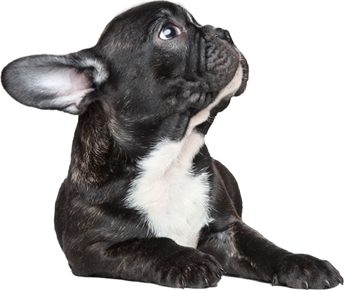

Уход
Здоровье
Дрессировка

Страна происхождения - Франция
Время зарождения породы: XVII век
Сильно привязывается к владельцу
Дружелюбен и игрив
Очень умный, легко обучается
Адаптируется к любому помещению
Довольно чуткий сторож
Девиз французского бульдога:
«любить того, кто тебя приручил».
"Французский уродец" долго не признавался как самостоятельная порода англичанами считавшими, что бульдог может быть только английский. В 1904 году английский кеннел-клуб, наконец, признает породу как самрстоятельную. Ей присваивается название «Le Bouldogue Francais», которое в дальнейшем получило английский эквивалент French Bulldog. В Англии создается ряд питомников, занимающихся разведением французских бульдогов. Однако первые английские кинологи не могли смириться с необычайной внешностью. Леди Кэтлин, одна из основателей клуба французских бульдогов в Англии, считала, что «французский бульдог вернулся (в Англию) очень привлекательным, но был наделен нежелательными чертами, такими, как стоячие уши, лягушачья морда, волнистый хвост и отсутствие бульдожьего характера». Видно, что становление породы шло в сложных условиях борьбы не только за внешний вид, но и за характер будущей породы. Однако из всех перечисленных «недостатков» англичане изменили только хвост, который у современного француза от рождения очень короткий и сильно искривлен, как у английского бульдога.
Стати французского бульдога:1 – мочка носа; 2 – спинка носа; 3 – переход ото лба к морде;4 – надбровная дуга; 5 – лоб; 6 – затылочный бугор; 7 – шея;8 – холка; 9 – спина; 10 – поясница; 11 – круп; 12 – корень хвоста;13 – хвост; 14 – седалищный бугор; 15 – бедро; 16 – голень;17 – скакательный сустав; 18 – плюсна; 19 – задняя лапа; 20 – колено;21 – пах; 22 – живот; 23 – грудь; 24 – передняя лапа; 25 – пясть;26 – предплечье; 27 – локоть; 28 – плечо; 29 – ухо; 30 – скула;31 – морда; 32 – губы
Французский бульдог неприхотлив в уходе. Главное, что необходимо делать, — протирать складки на морде, уши и глаза, чтобы не допустить развития инфекции. Купать собаку стоит не больше четырех раз в год, основной уход за шерстью — протирание влажным полотенцем и расчесывание массажной щеткой.
Французский бульдог относится к брахицефальным породам собак — большая голова, укороченный приплюснутый нос. Чаще других такие питомцы страдают от заболеваний глаз (выпадение третьего века) и дыхательных путей. В норме французский бульдог сопит лишь при сильном возбуждении, ночью может храпеть. Признаками патологии считается постоянный хрип, кашель и тяжелое дыхание.
Прежде чем привести в дом питомца, обзаведитесь инвентарем, необходимым для его содержания. В первую очередь вам понадобятся посуда для кормления, лежанка, ошейник, поводок, намордник и свисток.
Миска для кормления
Миска для кормления собаки должна быть устойчивой и массивной, чтобы ваш питомец не мог ее носить в зубах или переворачивать.
Нельзя использовать в качестве посуды для кормления собаки треснувшие тарелки или миски с зазубринами и неровностями на дне, так как собака может поранить о них язык.
Во время кормления французский бульдог может испачкать пол. Избежать этого можно, поставив миску на специальную подставку, положив под нее газету или деревянную дощечку с выпиленным отверстием для днища миски.
Миска для питьевой воды
Миска для питьевой воды обязательно должна быть устойчивой и тяжелой. Она должна стоять рядом с миской для кормления, всегда содержаться в чистоте и регулярно наполняться кипяченой водой.